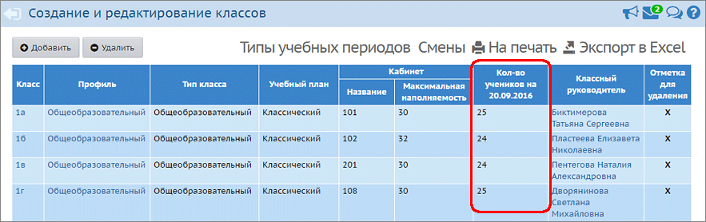

Эталонные значения наполняемости для классов
Чтобы отчёт мог определить процент заполнения данных по каждому классу, требуется ввести эталонное количество учащихся в экране "Обучение->Классы": Кол-во учеников на 20.09.ГГГГ, где ГГГГ - год, соответствующий началу текущего учебного года.

Отчёт "Контроль заполнения данных по учащимся" позволяет контролировать заполнение следующих полей личных карточек:
| · | Фамилия, имя
|
| · | Отчество
|
| · | Дата рождения
|
| · | Серия документа, удостоверяющего личность
|
| · | Номер документа, удостоверяющего личность
|
| · | Дата выдачи документа, удостоверяющего личность
|
| · | Кем выдан документ, удостоверяющий личность
|
| · | СНИЛС
|
| · | Запись о родителе (-ях)
|
| · | Адрес регистрации по месту жительства
|
| · | Адрес фактического места жительства
|
| · | Гражданство
|
| · | Место рождения
|
После того как вы отмечаете "галочками" набор полей, отчёт работает следующим образом. Считается, что личная карточка ученика не заполнена, если не заполнено хотя бы одно из отмеченных полей. (Другими словами, все поля, отмеченные галочками, отчёт считает обязательными для заполнения.)
Замечание: поле "Запись о родителе (-ях)" считается заполненным, если к ребёнку присоединён хотя бы один родитель.
Вид отчёта "Только незаполненные"
Выводится пофамильный список тех учащихся, у которых карточка не заполнена (это значит, что не заполнено хотя бы одно из отмеченных вами полей).
Вид отчёта "Итоговый отчёт"
Выводится список классов в ОО, и для каждого класса подсчитывается количество заполненных карточек учащихся в сравнении с эталонными значениями (см.выше).
Если для какого-то класса не задано эталонное значение наполняемости, то отчёт выводит надпись "Данные не заданы".
Как контролировать заполнение документов, удостоверяющих личность
Данный отчёт позволяет контролировать заполненность паспорта РФ, свидетельства о рождении РФ, а также любого другого типа документа, удостоверяющего личность (например, свидетельство о рождении иностранного государства). Таким образом, можно получить отчёт сразу по всем учащимся в ОО, не выделяя отдельно свидетельство о рождении, паспорт или другие типы документов.
Если отметить одну "галочку" для документа:
Например, если отмечена галочка "Номер документа, удостоверяющего личность", то при наличии хотя бы одного из номеров:
| · | номер свидетельства о рождении РФ,
|
| · | номер паспорта РФ,
|
| · | номер свидетельства о рождении иностранного государства,
|
| · | номер паспорта иностранного государства,
|
| · | номер военного билета,
|
| · | номер временного удостоверения личности гражданина РФ,
|
| а также всех других типов документов, где есть поле "Номер" -
|
Если отметить две и более "галочек" для документа:
в этом случае требуется, чтобы отмеченные "галочки" относились к одному типу документа.
Например, в личной карточке конкретного ученика введены и свидетельство о рождении РФ, и паспорт РФ, причём для свидетельства о рождении заполнены серия и номер, а для паспорта - только номер. Если отметить в отчёте галочки "Серия" и "Номер", то запись данного ученика считается заполненной, т.к. у него существует заполненный документ с заданным набором полей (этим документом является свидетельство о рождении).